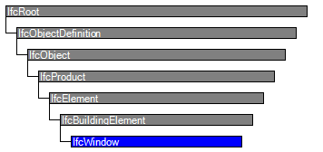

| Fenster |
 | Window |
 | Fenêtre |
| Item | SPF | XML | Change | Description | 4.0.0.0 |
|---|---|---|---|---|
| IfcWindow | ||||
| OwnerHistory | MODIFIED | Instantiation changed to OPTIONAL. | ||
| PredefinedType | ADDED | |||
| PartitioningType | ADDED | |||
| UserDefinedPartitioningType | ADDED |
The window is a building element that is predominately used to provide natural light and fresh air. It includes vertical opening but also horizontal opening such as skylights or light domes. It includes constructions with swinging, pivoting, sliding, or revolving panels and fixed panels. A window consists of a lining and one or several panels.
NOTE Definition according to ISO 6707-1
Construction for closing a vertical or near vertical opening in a wall or pitched roof that will admit light and may admit fresh air.
The IfcWindow defines a particular occurrence of a window inserted in the spatial context of a project. A window can:
NOTE Model View Definitions or implementer agreements may restrict the relationship to only include one window (or door) into one opening.
There are two main representations for window occurrences:
NOTE The entity IfcWindowStandardCase has been deprecated.
The actual parameter of the window and/or its shape is defined at the IfcWindow as the object occurrence definition, or by the IfcWindowType as the object type definition . The following parameters are provided:
HISTORY New entity in IFC1.0.
IFC4 CHANGE The attributes PredefinedType and OperationType are added, the applicable type object has been changed to IfcDoorType.
Parameteric Representation using parameters at IfcWindowType
The parameters, which define the shape of the IfcWindow, are given at the IfcWindowType and the property sets, which are included in the IfcWindowType. The IfcWindow only defines the local placement. The overall size of the IfcWindow to be used to apply the lining or panel parameter provided by the IfcWindowType is determined by the IfcShapeRepresentation with the RepresentationIdentifier = 'Profile'. Only in case of an IfcWindow inserted into an IfcOpeningElement using the IfcRelFillsElement relatioship, having a horizontal extrusion (along the y-axis of the IfcDoor), the overall size is determined by the extrusion profile of the IfcOpeningElement.
Figure 137 illustrates the insertion of a window into the IfcOpeningElement by creating an instance of IfcWindow with PartitioningType = DoublePanelHorizontal. The parameters OverallHeight and OverallWidth show the extent of the window in the positive Z and X axis of the local placement of the window. The lining and the transom are created by the given parameters.
 |
Figure 137 — Window placement |
Figure 138 illustrates the final window (DoublePanelHorizontal) with first panel having PanelPosition = TOP, OperationType = BOTTOMHUNG and second panel having PanelPosition = BOTTOM and OperationType = TILTANDTURNLEFTHAND.
 |
Figure 138 — Window planes |
Window opening operation by window type
The parameters that defines the shape of the IfcWindow, are given at the IfcWindowType and the property sets, which are included in the IfcWindowType. The IfcWindow only defines the local placement which determines the opening direction of the window. The overall layout of the IfcWindow is determined by its IfcWindowType.PartitioningType. Each window panel has its own operation type, provided by IfcWindowPanelProperties.OperationType. All window panels are assumed to open into the same direction (if relevant for the particular window panel operation. The hindge side (whether a window opens to the left or to the right) is determined by the IfcWindowPanelProperties.OperationType.
NOTE There are different conventions in different countries on how to show the symbolic presentation of the window panel operation (the "triangles"). Either as seen from the exterior, or from the interior side. The following figures show the symbolics from the exterior side (the convention as used predominately in Europe).
Figure 139 illustrates window operation types.
| ||||||||
Figure 139 — Window operations |
| # | Attribute | Type | Cardinality | Description | R |
|---|---|---|---|---|---|
| 9 | OverallHeight | IfcPositiveLengthMeasure | ? |
Overall measure of the height, it reflects the Z Dimension of a bounding box, enclosing the window opening. If omitted, the OverallHeight should be taken from the geometric representation of the IfcOpening in which the window is inserted.
NOTE The body of the window might be taller then the window opening (for example in cases where the window lining includes a casing). In these cases the OverallHeight shall still be given as the window opening height, and not as the total height of the window lining. | X |
| 10 | OverallWidth | IfcPositiveLengthMeasure | ? |
Overall measure of the width, it reflects the X Dimension of a bounding box, enclosing the window opening. If omitted, the OverallWidth should be taken from the geometric representation of the IfcOpening in which the window is inserted.
NOTE The body of the window might be wider then the window opening (for example in cases where the window lining includes a casing). In these cases the OverallWidth shall still be given as the window opening width, and not as the total width of the window lining. | X |
| 11 | PredefinedType | IfcWindowTypeEnum | ? |
Predefined generic type for a window that is specified in an enumeration. There may be a property set given specificly for the predefined types.
NOTE The PredefinedType shall only be used, if no IfcWindowType is assigned, providing its own IfcWindowType.PredefinedType. IFC4 CHANGE The attribute has been added at the end of the entity definition. | X |
| 12 | PartitioningType | IfcWindowTypePartitioningEnum | ? |
Type defining the general layout of the window in terms of the partitioning of panels.
NOTE The PartitioningType shall only be used, if no type object IfcWindowType is assigned, providing its own IfcWindowType.PartitioningType. IFC4 CHANGE The attribute has been added at the end of the entity definition. | X |
| 13 | UserDefinedPartitioningType | IfcLabel | ? | Designator for the user defined partitioning type, shall only be provided, if the value of PartitioningType is set to USERDEFINED. | X |
| Rule | Description |
|---|---|
| CorrectStyleAssigned | Either there is no door type object associated, i.e. the IsTypedBy inverse relationship is not provided, or the associated type object has to be of type IfcWindowStyle.
NOTEnbsp; The deprecated type IfcWindowStyle is still included for backward compatibility reasons. |

| # | Attribute | Type | Cardinality | Description | R |
|---|---|---|---|---|---|
| IfcRoot | |||||
| 1 | GlobalId | IfcGloballyUniqueId | Assignment of a globally unique identifier within the entire software world. | X | |
| 2 | OwnerHistory | IfcOwnerHistory | ? |
Assignment of the information about the current ownership of that object, including owning actor, application, local identification and information captured about the recent changes of the object,
NOTE only the last modification in stored - either as addition, deletion or modification. IFC4 CHANGE The attribute has been changed to be OPTIONAL. | X |
| 3 | Name | IfcLabel | ? | Optional name for use by the participating software systems or users. For some subtypes of IfcRoot the insertion of the Name attribute may be required. This would be enforced by a where rule. | X |
| 4 | Description | IfcText | ? | Optional description, provided for exchanging informative comments. | X |
| IfcObjectDefinition | |||||
| HasAssignments | IfcRelAssigns @RelatedObjects | S[0:?] | Reference to the relationship objects, that assign (by an association relationship) other subtypes of IfcObject to this object instance. Examples are the association to products, processes, controls, resources or groups. | X | |
| Nests | IfcRelNests @RelatedObjects | S[0:1] | References to the decomposition relationship being a nesting. It determines that this object definition is a part within an ordered whole/part decomposition relationship. An object occurrence or type can only be part of a single decomposition (to allow hierarchical strutures only).
IFC4 CHANGE The inverse attribute datatype has been added and separated from Decomposes defined at IfcObjectDefinition. | ||
| IsNestedBy | IfcRelNests @RelatingObject | S[0:?] | References to the decomposition relationship being a nesting. It determines that this object definition is the whole within an ordered whole/part decomposition relationship. An object or object type can be nested by several other objects (occurrences or types).
IFC4 CHANGE The inverse attribute datatype has been added and separated from IsDecomposedBy defined at IfcObjectDefinition. | X | |
| HasContext | IfcRelDeclares @RelatedDefinitions | S[0:1] | References to the context providing context information such as project unit or representation context. It should only be asserted for the uppermost non-spatial object.
IFC4 CHANGE The inverse attribute datatype has been added. | ||
| IsDecomposedBy | IfcRelAggregates @RelatingObject | S[0:?] | References to the decomposition relationship being an aggregation. It determines that this object definition is whole within an unordered whole/part decomposition relationship. An object definitions can be aggregated by several other objects (occurrences or parts).
IFC4 CHANGE The inverse attribute datatype has been changed from the supertype IfcRelDecomposes to subtype IfcRelAggregates. | X | |
| Decomposes | IfcRelAggregates @RelatedObjects | S[0:1] | References to the decomposition relationship being an aggregation. It determines that this object definition is a part within an unordered whole/part decomposition relationship. An object definitions can only be part of a single decomposition (to allow hierarchical strutures only).
IFC4 CHANGE The inverse attribute datatype has been changed from the supertype IfcRelDecomposes to subtype IfcRelAggregates. | X | |
| HasAssociations | IfcRelAssociates @RelatedObjects | S[0:?] | Reference to the relationship objects, that associates external references or other resource definitions to the object.. Examples are the association to library, documentation or classification. | X | |
| IfcObject | |||||
| 5 | ObjectType | IfcLabel | ? |
The type denotes a particular type that indicates the object further. The use has to be established at the level of instantiable subtypes. In particular it holds the user defined type, if the enumeration of the attribute PredefinedType is set to USERDEFINED.
| X |
| IsTypedBy | IfcRelDefinesByType @RelatedObjects | S[0:1] | Set of relationships to the object type that provides the type definitions for this object occurrence. The then associated IfcTypeObject, or its subtypes, contains the specific information (or type, or style), that is common to all instances of IfcObject, or its subtypes, referring to the same type.
IFC4 CHANGE New inverse relationship, the link to IfcRelDefinesByType had previously be included in the inverse relationship IfcRelDefines. Change made with upward compatibility for file based exchange. | X | |
| IsDefinedBy | IfcRelDefinesByProperties @RelatedObjects | S[0:?] | Set of relationships to property set definitions attached to this object. Those statically or dynamically defined properties contain alphanumeric information content that further defines the object.
IFC4 CHANGE The data type has been changed from IfcRelDefines to IfcRelDefinesByProperties with upward compatibility for file based exchange. | X | |
| IfcProduct | |||||
| 6 | ObjectPlacement | IfcObjectPlacement | ? | Placement of the product in space, the placement can either be absolute (relative to the world coordinate system), relative (relative to the object placement of another product), or constraint (e.g. relative to grid axes). It is determined by the various subtypes of IfcObjectPlacement, which includes the axis placement information to determine the transformation for the object coordinate system. | X |
| 7 | Representation | IfcProductRepresentation | ? | Reference to the representations of the product, being either a representation (IfcProductRepresentation) or as a special case a shape representations (IfcProductDefinitionShape). The product definition shape provides for multiple geometric representations of the shape property of the object within the same object coordinate system, defined by the object placement. | X |
| IfcElement | |||||
| 8 | Tag | IfcIdentifier | ? | The tag (or label) identifier at the particular instance of a product, e.g. the serial number, or the position number. It is the identifier at the occurrence level. | X |
| FillsVoids | IfcRelFillsElement @RelatedBuildingElement | S[0:1] | Reference to the IfcRelFillsElement Relationship that puts the element as a filling into the opening created within another element. | ||
| HasOpenings | IfcRelVoidsElement @RelatingBuildingElement | S[0:?] | Reference to the IfcRelVoidsElement relationship that creates an opening in an element. An element can incorporate zero-to-many openings. For each opening, that voids the element, a new relationship IfcRelVoidsElement is generated. | X | |
| ContainedInStructure | IfcRelContainedInSpatialStructure @RelatedElements | S[0:1] | Containment relationship to the spatial structure element, to which the element is primarily associated. This containment relationship has to be hierachical, i.e. an element may only be assigned directly to zero or one spatial structure. | X | |
| IfcBuildingElement | |||||
| IfcWindow | |||||
| 9 | OverallHeight | IfcPositiveLengthMeasure | ? |
Overall measure of the height, it reflects the Z Dimension of a bounding box, enclosing the window opening. If omitted, the OverallHeight should be taken from the geometric representation of the IfcOpening in which the window is inserted.
NOTE The body of the window might be taller then the window opening (for example in cases where the window lining includes a casing). In these cases the OverallHeight shall still be given as the window opening height, and not as the total height of the window lining. | X |
| 10 | OverallWidth | IfcPositiveLengthMeasure | ? |
Overall measure of the width, it reflects the X Dimension of a bounding box, enclosing the window opening. If omitted, the OverallWidth should be taken from the geometric representation of the IfcOpening in which the window is inserted.
NOTE The body of the window might be wider then the window opening (for example in cases where the window lining includes a casing). In these cases the OverallWidth shall still be given as the window opening width, and not as the total width of the window lining. | X |
| 11 | PredefinedType | IfcWindowTypeEnum | ? |
Predefined generic type for a window that is specified in an enumeration. There may be a property set given specificly for the predefined types.
NOTE The PredefinedType shall only be used, if no IfcWindowType is assigned, providing its own IfcWindowType.PredefinedType. IFC4 CHANGE The attribute has been added at the end of the entity definition. | X |
| 12 | PartitioningType | IfcWindowTypePartitioningEnum | ? |
Type defining the general layout of the window in terms of the partitioning of panels.
NOTE The PartitioningType shall only be used, if no type object IfcWindowType is assigned, providing its own IfcWindowType.PartitioningType. IFC4 CHANGE The attribute has been added at the end of the entity definition. | X |
| 13 | UserDefinedPartitioningType | IfcLabel | ? | Designator for the user defined partitioning type, shall only be provided, if the value of PartitioningType is set to USERDEFINED. | X |
Window Attributes
The Window Attributes concept applies to this entity.
The IfcWindowTypePartitioningEnum defines the general layout of the window type and its symbolic presentation. Depending on the enumerator, the appropriate instances of IfcWindowLiningProperties and IfcWindowPanelProperties are attached in the list of HasPropertySets. The IfcWindowTypePartitioningEnum mainly determines the way of partitioning the window into individual window panels and thereby number and position of window panels.
See IfcWindowTypePartitioningEnum for the correct usage of panel partitioning and IfcWindowPanelProperties for the opening symbols for different panel operation types.
Property Sets for Objects
The Property Sets for Objects concept template applies to this entity as shown in Table 105.
| ||||||||||||||||||||||||||||||||||||||||||||||||||||||||||||||||||||||||||||
Table 105 — IfcWindow Property Sets for Objects |
Object Typing
The Object Typing concept template applies to this entity as shown in Table 106.
| ||||
Table 106 — IfcWindow Object Typing |
Quantity Sets
The Quantity Sets concept template applies to this entity as shown in Table 107.
| ||||||||||||||||||||||||||
Table 107 — IfcWindow Quantity Sets |
Material Constituent Set with Override
The Material Constituent Set with Override concept applies to this entity.
The material of the IfcWindow is defined by the IfcMaterialConstituentSet or as fall back by IfcMaterial and attached by the IfcRelAssociatesMaterial relationship. It is accessible by the inverse HasAssociations relationship.
The following keywords for IfcMaterialConstituentSet.MaterialConstituents[n].Name shall be used:
If the fall back single IfcMaterial is referenced, it applies to the lining and framing of the window.
<?xml version="1.0"?>
<ConceptRoot xmlns:xsi="http://www.w3.org/2001/XMLSchema-instance" xmlns:xsd="http://www.w3.org/2001/XMLSchema" uuid="0ef29a62-58a8-47c1-8412-35ebc9ba4d90" name="IfcWindow" status="sample" applicableRootEntity="IfcWindow">
<Applicability uuid="00000000-0000-0000-0000-000000000000" status="sample">
<Template ref="383f3cd3-41d0-4eb3-aa5e-f7cf5331b551" />
<TemplateRules operator="and" />
</Applicability>
<Concepts>
<Concept uuid="42256660-4da8-4ebb-95f1-2718953b4cf9" name="Window Attributes" status="sample" override="false">
<Template ref="f80dd8bf-fc59-4138-aa05-5ed02c4b6be2" />
</Concept>
<Concept uuid="c0aacca3-18cd-4c20-bcac-acd4fce97d89" name="Property Sets for Objects" status="sample" override="false">
<Template ref="f74255a6-0c0e-4f31-84ad-24981db62461" />
<TemplateRules operator="and">
<TemplateRule Parameters="PsetName=Pset_WindowCommon;" />
</TemplateRules>
</Concept>
<Concept uuid="5e520c0e-42a4-44b8-a026-6e6543b269ec" name="Object Typing" status="sample" override="false">
<Template ref="35a2e10e-20df-40f4-ab2f-dacf0a6744f4" />
<Requirements>
<Requirement applicability="export" requirement="recommended" exchangeRequirement="dcd96125-898e-4ff0-b294-eb02afe953aa" />
<Requirement applicability="import" requirement="recommended" exchangeRequirement="dcd96125-898e-4ff0-b294-eb02afe953aa" />
</Requirements>
<TemplateRules operator="and">
<TemplateRule Parameters="RelatingType=IfcWindowType;" />
</TemplateRules>
</Concept>
<Concept uuid="068f1dde-2371-433c-9150-f5f6b4414e81" name="Quantity Sets" status="sample" override="false">
<Template ref="6652398e-6579-4460-8cb4-26295acfacc7" />
<Requirements>
<Requirement applicability="export" requirement="recommended" exchangeRequirement="dcd96125-898e-4ff0-b294-eb02afe953aa" />
<Requirement applicability="import" requirement="recommended" exchangeRequirement="dcd96125-898e-4ff0-b294-eb02afe953aa" />
</Requirements>
<TemplateRules operator="and">
<TemplateRule Parameters="QsetName=Qto_WindowBaseQuantities;" />
</TemplateRules>
</Concept>
<Concept uuid="53f06b2e-6097-471a-9e5d-11ec282b6895" name="Material Constituent Set with Override" status="sample" override="false">
<Template ref="b31e8fb4-e7b9-48da-bbf4-cfd422f5f6cd" />
</Concept>
</Concepts>
</ConceptRoot>
<xs:element name="IfcWindow" type="ifc:IfcWindow" substitutionGroup="ifc:IfcBuildingElement" nillable="true"/>
<xs:complexType name="IfcWindow">
<xs:complexContent>
<xs:extension base="ifc:IfcBuildingElement">
<xs:attribute name="OverallHeight" type="ifc:IfcPositiveLengthMeasure" use="optional"/>
<xs:attribute name="OverallWidth" type="ifc:IfcPositiveLengthMeasure" use="optional"/>
<xs:attribute name="PredefinedType" type="ifc:IfcWindowTypeEnum" use="optional"/>
<xs:attribute name="PartitioningType" type="ifc:IfcWindowTypePartitioningEnum" use="optional"/>
<xs:attribute name="UserDefinedPartitioningType" type="ifc:IfcLabel" use="optional"/>
</xs:extension>
</xs:complexContent>
</xs:complexType>
ENTITY IfcWindow
SUBTYPE OF (IfcBuildingElement);
OverallHeight : OPTIONAL IfcPositiveLengthMeasure;
OverallWidth : OPTIONAL IfcPositiveLengthMeasure;
PredefinedType : OPTIONAL IfcWindowTypeEnum;
PartitioningType : OPTIONAL IfcWindowTypePartitioningEnum;
UserDefinedPartitioningType : OPTIONAL IfcLabel;
WHERE
CorrectStyleAssigned : (SIZEOF(IsTypedBy) = 0)
OR ('IFCSHAREDBLDGELEMENTS.IfcWindowType' IN TYPEOF(SELF\IfcObject.IsTypedBy[1].RelatingType));
END_ENTITY;


 Instance diagram
Instance diagram Link to this page
Link to this page